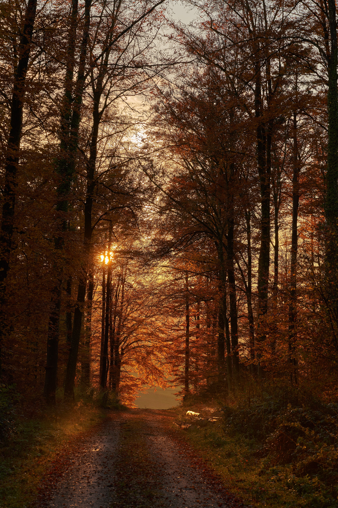

Welcome to Autumn

Photo by Wolfgang_Hasselmann Pixabay
Autumn Forest
Autumn is one of the most beautiful seasons of the year. Leaves shift from green to red, orange, and yellow, creating a colorful landscape. The cool weather and tranquil atmosphere make autumn an excellent time to connect with nature.